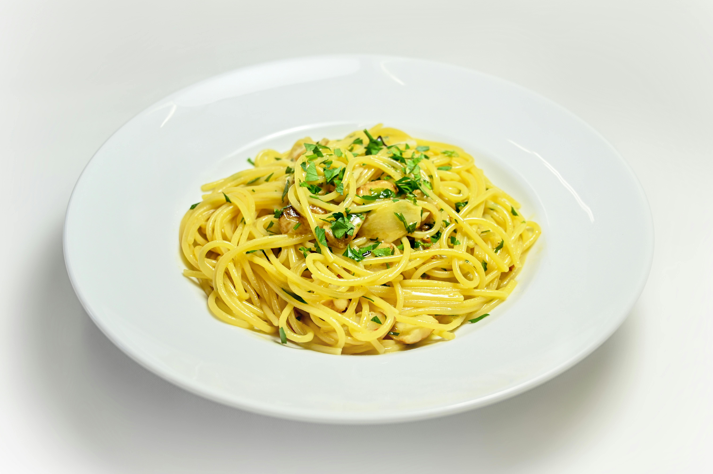

Receitas em Destaque

 Chef Maria
Chef Maria
Espaguete Alho e Óleo
Clássico italiano com pancetta crocante e molho cremoso de ovos e queijo pecorino.
Massas
Italiana
Chef Maria

Brigadeiro Gourmet
Brigadeiro premium com chocolate 70% cacau e toque de flor de sal.
Doces
Brasileira
 Chef João
Chef João


Todas as Receitas

Picanha na Manteiga
Picanha suculenta grelhada na manteiga com alho e ervas.
Carnes
Brasileira
 Chef Carlos
Chef Carlos

Salada Caesar
Clássica salada Caesar com croutons caseiros e molho cremoso.
Saladas
Light
 Chef Sofia
Chef Sofia

Pudim de Leite
Pudim cremoso com calda de caramelo, receita tradicional.
Doces
Sobremesas
 Chef Antônio
Chef Antônio

Moqueca de Peixe
Moqueca capixaba tradicional com peixe fresco e azeite de dendê.
Brasileira
Frutos do Mar
 Chef Rita
Chef Rita

Panquecas Americanas
Panquecas fofas com maple syrup e frutas frescas, perfeitas para o café da manhã.
Café da Manhã
Americana
 Chef Lucas
Chef Lucas